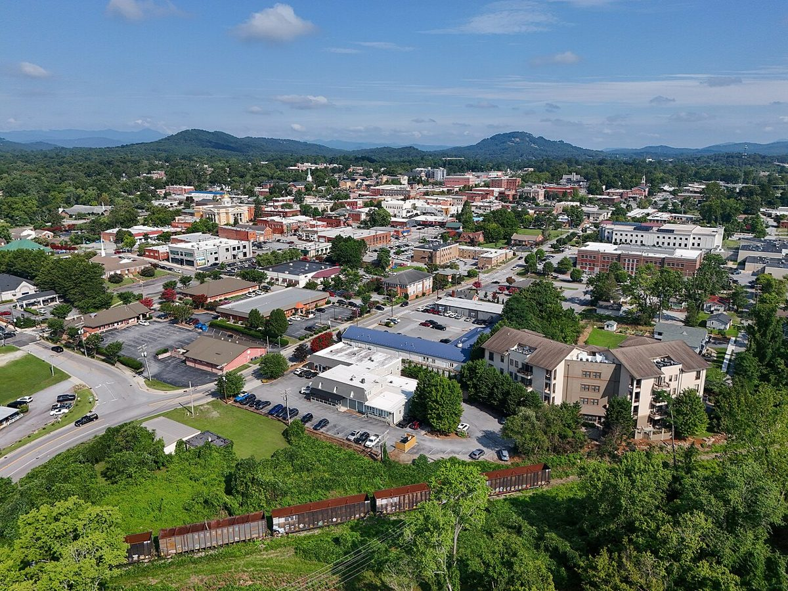

Make room for one good stop
Walk the historic downtown and choose a café or simple lunch. Use this as an alternative to part of the Brevard day rather than automatically adding another long stop.
NORTH CAROLINA · OPTIONAL DISCOVERY
An optional variation for your November road trip. Add it only if it suits your pace; no extra overnight or reservation is assumed.
THE FEEL OF THE PLACE
Hendersonville is an optional alternative when you want an easy Main Street stroll and a satisfying lunch rather than another overlook. Its preserved downtown, cafés and small shops offer a gentler pace south of Asheville. Use it as a deliberate substitute or extra stop on Monday, with enough daylight left for the chosen waterfall; it is not already included in the base itinerary.

Representative photograph from the linked archive; seasons and current conditions will differ.
AN OPTIONAL CHANGE OF PACE
Walk the historic downtown and choose a café or simple lunch. Use this as an alternative to part of the Brevard day rather than automatically adding another long stop.
EAT WELL, KEEP IT SIMPLE
Casual choices for this stop, with restaurant information and independent reviews or local guides to help you choose. Published prices exclude extras unless noted; recheck hours before setting off.
Hot dogs, burgers and simple counter-service comfort food at 226 Kanuga Road. A straightforward low-cost stop near downtown, with local character rather than a long sit-down meal.
Budget: Strong budget option; exact current menu prices not verified.
When to go: Official Monday–Friday 10am–8pm; Saturday 10am–4pm; Sunday closed. Fits an optional Monday stop.
American and Latin-influenced breakfast at 536 North Main Street. A more leisurely option with vegan and vegetarian choices, especially if you replace part of the day’s driving with a downtown lunch.
Budget: Casual brunch, likely more than a hot-dog lunch; current menu total not verified. Old 2022 menu prices intentionally excluded.
When to go: Official seven days 7:30am–2pm. Arrive for breakfast or early lunch.
CHECK BEFORE YOU GO
Check opening hours and road or trail access shortly before travel. Keep the detour flexible around daylight and your next stop.